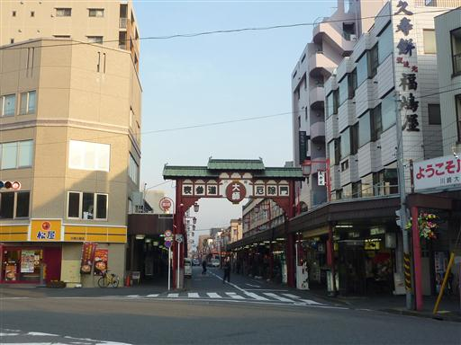
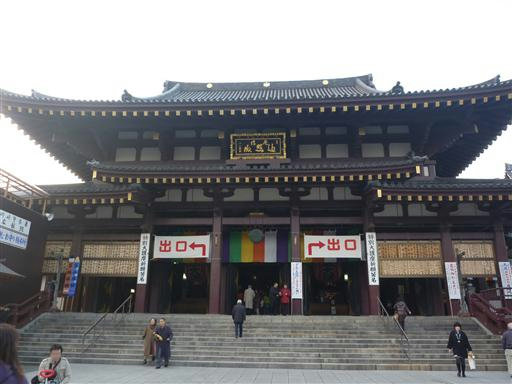
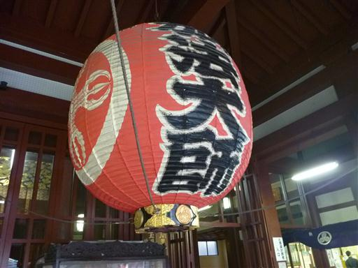
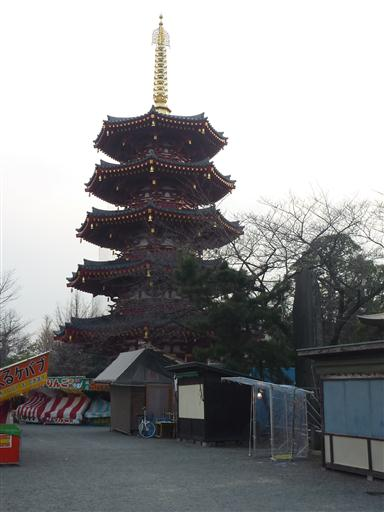
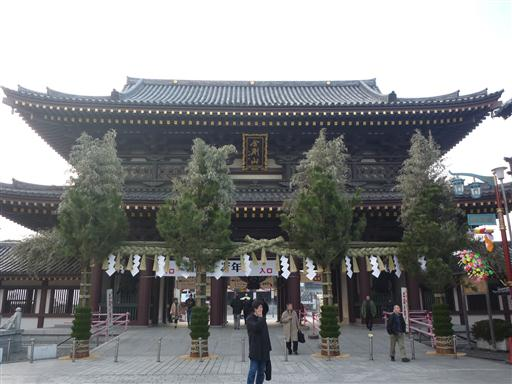
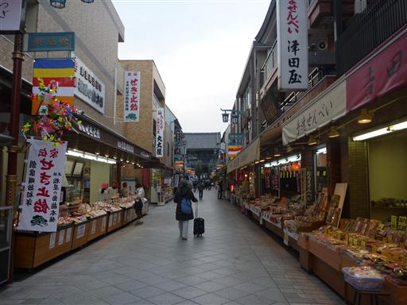

川崎大師
| 日付 | 2010年12月30日（木） |
|---|---|
| メンバー | 家族（妻） |
| アクセス | 電車 |
初詣の参拝者数で明治神宮、成田山に次いで多い川崎大師。
川崎に住んで長いのにまだ行ったことがなかったので、
人の少なそうな年末に訪れてみることにする。
駅から外に出ると、目の前に川崎大師の門が立っている。
ここから川崎大師までは少し歩く必要がある。

川崎大師に到着。露店は準備に余念がない。

川崎大師の本堂。なかなか立派だ。
川崎大師の歴史は古いが、この建物は昭和39年築と比較的新しい。

大きな提灯。

五重塔も建っている。これも昭和59年築と新しい。

大山門をくぐって外に出る。ここが本当の入口で
今回は初詣参拝時の逆順を辿った。

川崎大師に続く道は土産物屋などの売店が並んでいる。
2日後、この道は人で埋め尽くされるはずだ。
こちらの商店も正月を控えて気合が入っていた。
